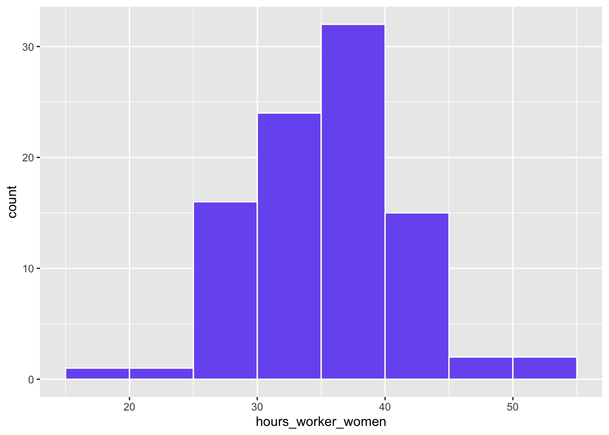
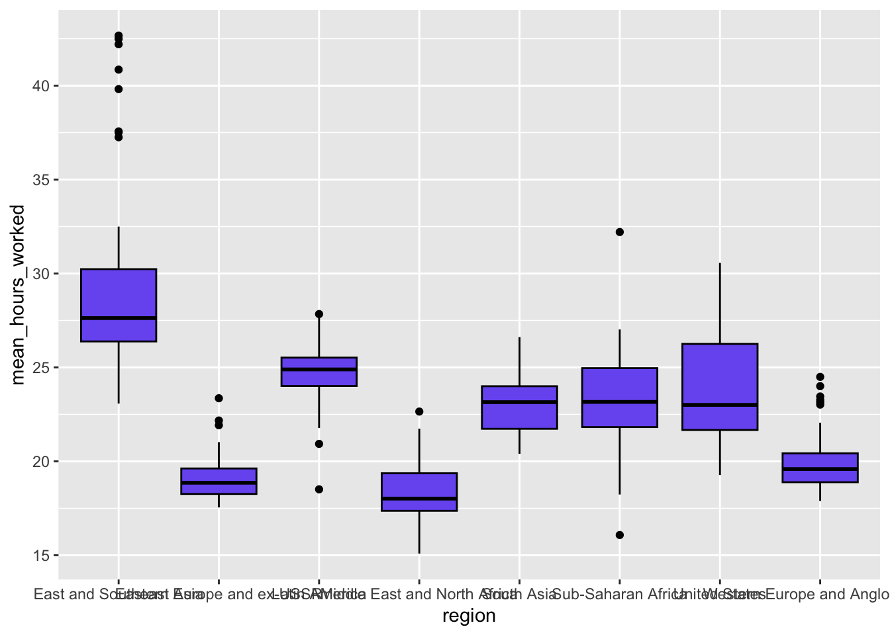
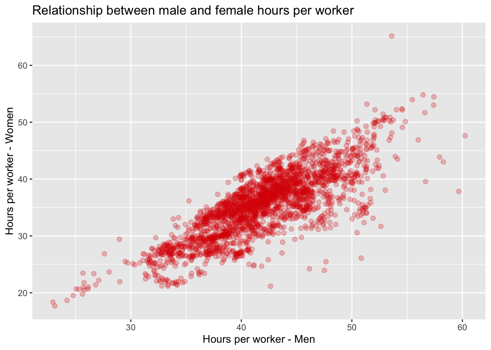

library(tidyverse)
global_working_hours <- read.csv("https://www.dropbox.com/scl/fi/ln4ie7ik36opjx5juifqs/hours_worked_clean.csv?rlkey=ry52v43qyxhtr4ye461twkgnj&dl=1")
global_working_hours |>
summarise(mean_worked = mean(hours_worked),
mean_worker = mean(hours_worker))Lecture 2: Tasks Solutions
Your Turn #1
Question 1
The large difference is driven by the fact that hours_worked corresponds to hours worked divided by the adult population, and a share of adults don’t work.
Question 2
global_working_hours |>
summarise(median_worked = median(hours_worked),
median_worker = median(hours_worker))The medians are quite similar to the means in question 1 above. This suggests the distribution of working hours across countries is relatively symmetric.
Question 3
quantile(global_working_hours$hours_worker) 0% 25% 50% 75% 100%
23.90819 35.52082 40.32315 43.68666 56.14137 The 75th percentile is around 43.5.
Question 4
global_working_hours |>
summarise(iqr_men = IQR(hours_worker_men),
iqr_women = IQR(hours_worker_women))The dispersion in hours per worker is wider for women than for men.
Question 5
global_working_hours |>
summarise(cor(hours_worked, tax_labor, use = "complete.obs"))The correlation is -0.5 which means that an increase in the labor tax rate is associated with a reduction in (average) hours worked.
Your Turn #2
Question 1
global_working_hours_panel <- read.csv("https://www.dropbox.com/scl/fi/aq6nlnuun9o8bk86h89a2/hours_worked_panel_clean.csv?rlkey=f6jqgl8swkvf6kgl1z9eqczmr&dl=1")
global_working_hours_panel |>
count(year)Question 2
global_working_hours_panel |>
filter(year == 2023 & hours_worker > 48)Question 3
global_working_hours_panel |>
filter(hours_worker > 30 & hours_worker < 32 & region == "Latin America")Question 4
global_working_hours_panel |>
filter(region %in% c("Western Europe and Anglosphere", "United States") &
year == 2023) |>
summarise(max_hours_worker = max(hours_worker),
.by = region)Question 5
global_working_hours_panel |>
filter(year %in% c(1990, 2000, 2010, 2020)) |>
mutate(diff_men_women = hours_worked_men - hours_worked_women) |>
summarise(mean_diff = mean(diff_men_women),
.by = year)The difference in hours worked between men and women has decreased markedly over time (from ~ 15h to ~10h).
Your Turn #3
Question 1
global_working_hours_panel |>
filter(year == 2022) |>
ggplot(aes(x = hours_worker_women)) +
geom_histogram(binwidth = 5, boundary = 30, color = "white", fill = "#785EF0")
binwidth: width of each binboundary: value at which one of the bins startscolor: color of bar contoursfill: color of bars
Question 2
global_working_hours_panel |>
summarise(mean_hours_worked = mean(hours_worked),
.by = c(year, region)) |>
ggplot(aes(x = region, y = mean_hours_worked)) +
geom_boxplot(color = "black", fill = "#785EF0")
Question 3
global_working_hours_panel |>
ggplot(aes(x = hours_worker_men, y = hours_worker_women)) +
geom_point(size = 2, alpha = 0.25, colour = "#d90502") +
labs(x = "Hours per worker - Men",
y = "Hours per worker - Women",
title = "Relationship between male and female hours per worker")Warning: Removed 61 rows containing missing values or values outside the scale range
(`geom_point()`).